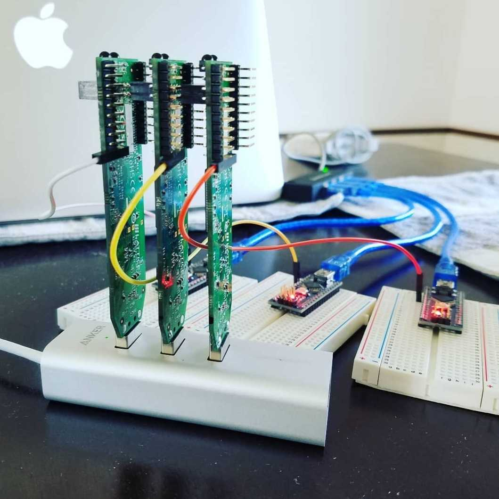
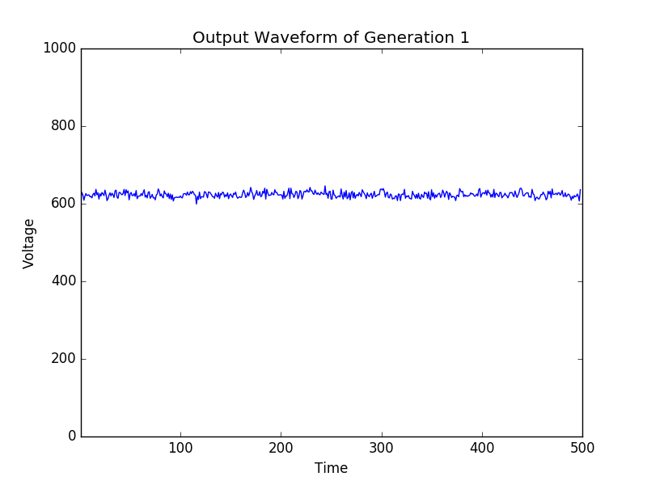

Variance Maximization
The first and simplest of the new projects, aimed at generating an evolved circuit with a maximally noisy output analog signal.
What's this all about?
Evolvable hardware is the application of evolutionary algorithms to hardware systems during design, operation, or both. It can be used to simulate the parameter optimization for physical designs or search for new and counterintuitive designs altogether. For reconfigurable hardware, such as field programmable gate arrays (FPGAs) and other programmable logic devices, the evolutionary process can be performed intrinsic to the hardware itself and exploit device-specific characteristics, including manufacturing errors and physical effects that fall below fabrication tolerances.


As the research into FPGA-intrinsic analog evolvable hardware has been scant for the last 20 years, the first step was to find a way to make bitstream evolution possible again. Thanks to the work of Claire Wolf and Mathias Lasser's project icestorm the complete reverse engineering of the Lattice iCE40 bitstream format has serendipitously unlocked the capability to perform genetic evolution of the bitstream. This website is dedicated to the continuation of research pioneered by Adrian Thompson, Tetsuya Higuchi, Hugo de Garis, among many others.
The first and simplest of the new projects, aimed at generating an evolved circuit with a maximally noisy output analog signal.
From Thompson's first EHW experiments, an analog circuit capable of generating a pseudo-stable periodic oscillator.
The seminal EHW experiment recreated on modern hardware: an analog circuit to discriminate between input tones.
Developing a clean oscillator from analog components is a serious challenge.
Treating unclocked FPGA fabric as a reservoir and incoporating a physical, linear readout layer.
Evolving analog circuits to interpret audio signals that occur at biological timescales.